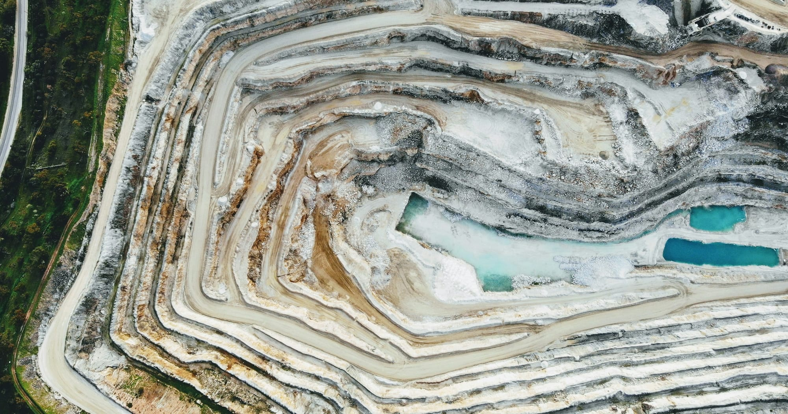

CEO MESSAGE
신뢰를 쌓고,
품질로 증명하며
책임으로 미래를
열겠습니다.
㈜대홍은 품질과 안전을 최우선으로 생각하며 건설 산업의 든든한 기반을 만들어가고 있습니다.
기본과 원칙을 지키는 경영, 고객과의 약속을 실천하는 책임경영을 통해 지속 가능한 성장과 상생의 가치를 실현하겠습니다.
앞으로도 신뢰받는 기업, 미래를 준비하는 기업으로 나아가겠습니다.
감사합니다.
㈜대홍 대표이사조이휘
OVERVIEW
회사 개요
석산을 운영하며 석재 채굴부터 쇄석, 샌드, 골재까지 공급합니다.
- 상호
- (주)대홍
- 대표이사
- 조이휘
- 설립
- 1979년 7월 (대진산업)
- 법인전환
- 1993년 9월 (주)대홍
- 소재지
- 경상북도 성주군 초전면 주천로 1332-22
- 전화 / 팩스
- 054-932-8855 / 054-932-8856
- 사업 분야
- 석재 채굴, 쇄석 생산, 샌드·골재 공급
HISTORY
연혁
- 1979.07
대진산업 설립
- 1993.09
㈜대홍 법인전환
- 1996.03
세척골재생산설비 설치 업계최초
- 1999.03
KTX 궤도자갈 공식 납품 업체 선정 업계최초
- 1999.06
I.S.O 9002 인증획득
- 2007.12
자동화 골재상차 설비 업계최초
- 2013.08
AMS 시스템 개발 (최신 자동화 시스템) 업계최초
- 2024.05
성주 채석단지 지정 (경상북도고시 제2024–180호)

LOCATION
찾아오시는 길
- ADDRESS
- 경상북도 성주군 초전면 주천로 1332-22
- TEL / FAX
- 054-932-8855 / 054-932-8856